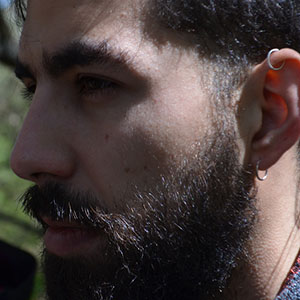

José Miguel Letelier nació en Santiago de Chile, en 2009 se mudó a Buenos Aires para cursar sus estudios universitarios. Actualmente es estudiante avanzado de la carrera de Cs. Antropológicas con orientación en Arqueología. Desde el año 2016, participa de las investigaciones del equipo, realizando tanto trabajos de laboratorio como campañas de excavación y prospección.
Su formación principal se relaciona con el analisis litico, y sus intereses de investigación se abocan a indagar sobre el rol social que cumplieron los morteros para las sociedades que habitaron el territorio que hoy ocupa la localidad de Guayamba, Dpto. El Alto, Provincia de Catamarca.